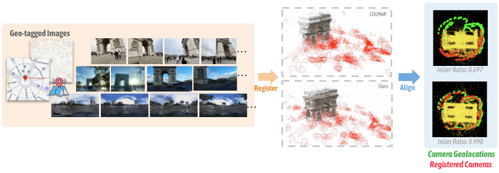
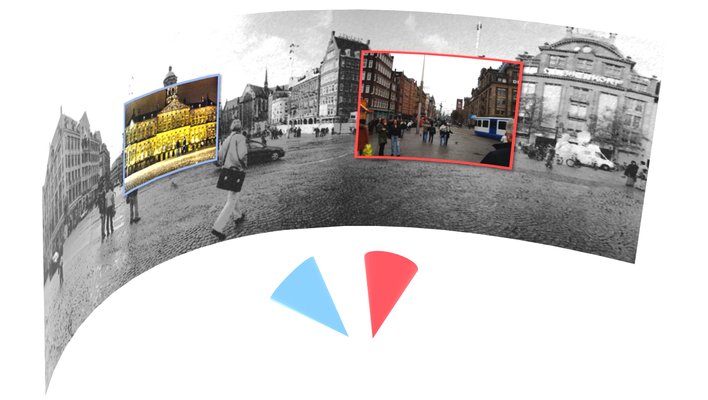
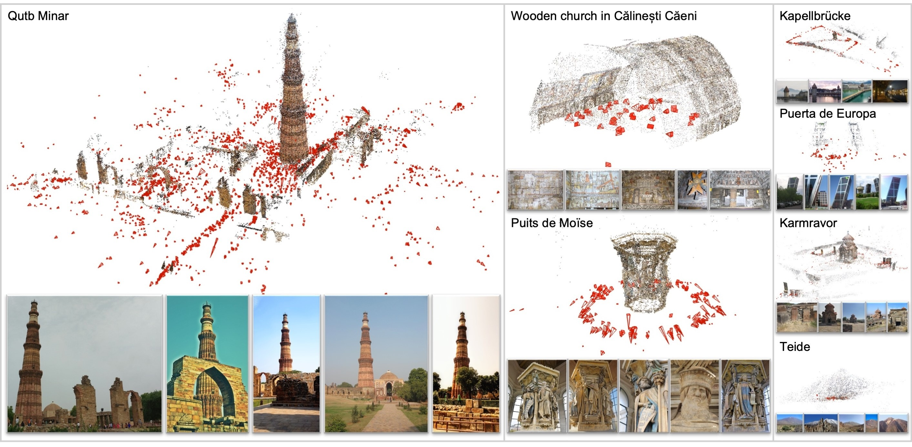
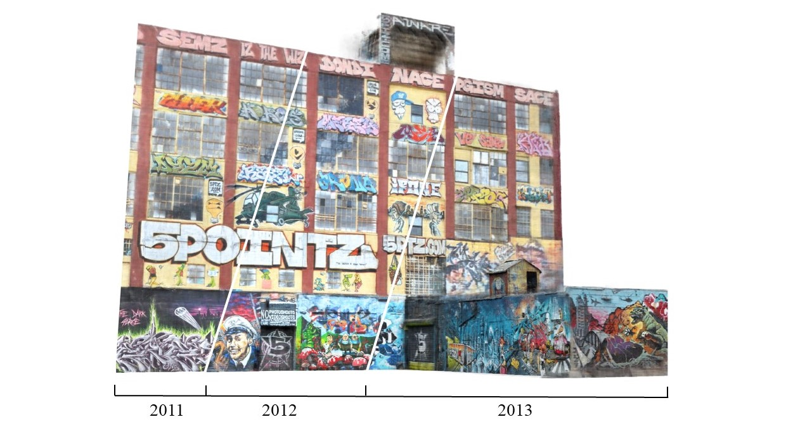
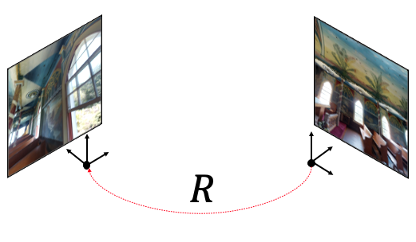
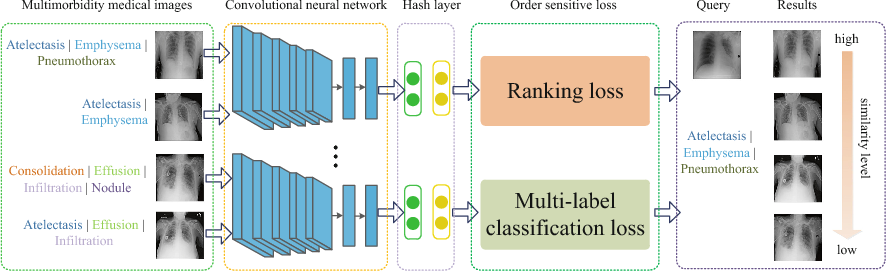

Publications
My research interests lie in 3D computer vision and visual intelligence.

Doppelgangers++: Improved Visual Disambiguation with Geometric 3D Features
CVPR 2025 (Highlight)


MegaScenes: Scene-Level View Synthesis at Scale
ECCV 2024

Doppelgangers: Learning to Disambiguate Images of Similar Structures
ICCV 2023 (Oral)

Tracking Everything Everywhere All at Once
ICCV 2023 (Best Student Paper Award)



